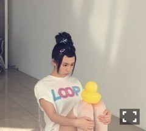
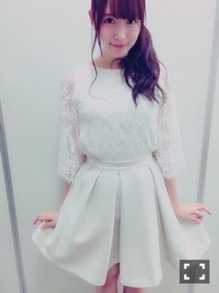
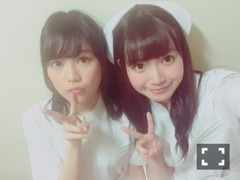

| 2016/05 31 Tue | ひめたん-0o0-その641 |


月刊エンタメ発売中！
グラビア撮影好き～(´｡•ω•｡`)
この現場、すごくわちゃわちゃしてて
終始笑ってました！！
無邪気な表情、大人っぽい表情、
こうして少しずつ
表現の振り幅を広げていきたいな
特に前半のページは
カメラを全然意識してなくて
素で楽しかったです。
あの笑顔がいつも出せたらな～
是非チェックしてみてください！
日曜日は握手会でした。
来てくださった皆さんありがとう(^o^)
終始バタバタしてて写メ少なめです
お留守番チームさんごめんね。
1部 巻き下ろし
2部 説明できないけどふわっとしたやつ
3部 サイドポニー
全身ホワイト
4部 サイドポニー
5部 巻き下ろし

らじらーで着てた服です
全身撮れてなくて申し訳ない( >_< )
いつかの収録でも着たので
是非その時に見てください。
下は黒のパンツを履いてました～
アルバムのお話が多かったかな
特に乃木團楽曲を褒めていただけて
凄く嬉しかったです！
他にも、
らじらー！、ANN0、乃木SHOW、
全国ツアー、モバメ、etc......
普段発信する立場の人間だから
こうして会いに来てくれて
ちゃんと届いてるんだなって感じて
幸せですo(^o^)o
次は土曜日、パシフィコ横浜。
14thシングルとしてはラスト個握かな？
日曜の夜は、らじらー！サンデー
ゲストは声優アーツに豊永利行さん、
乃木坂から深川麻衣ちゃんが来てくれました
まいまいは乃木坂卒業前
最後のらじらー！出演ということで
途中番組からのサプライズもあり
笑いあり、涙ありの
濃い時間になったと思います( ˇωˇ )
私はホスト側として
まいまいに喜んで貰えて
本当に良かったなと思いながら
この番組のあたたかさは異常だなと、
改めてらじらー！の一員になれて
幸せだなと感じた一日でした。
まいまい、あと半月、
悔いの残らないよう
精一杯アイドル楽しんでね( ˇωˇ )
そして次回も乃木坂週です！
ゲストは声優アーツに村川梨衣さん、
乃木坂からは松村沙友理ちゃんです。
まっちゅん初登場( ˆωˆ )
リスナーの皆さんお待たせしました！
募集中のメールテーマはこちら
◯まっちゅんへの応援メッセージ
◯RAPで教えてNOGIZAKA CHAN
◯擬音でドッカーン対決！
◯オリひめトークセッション
おたよりお待ちしてます！
宛先はこちら
月曜日はNOGIBINGO!6
#8 妄想リクエスト回でした！

藤森さーん(｀・ω・´)！
この写メ保存してくださいよー！
見事にフリにされましたが、とはいえ
あの企画いつも好きだからまた出演できて、
さらにナース服も着れて内心楽しかったです
ちょっと感謝ですありがとうございます。笑
何よりいくちゃんが楽しそうでした～＊
ANN0もそうだったけれど
番組の壁を越えて
交流するのって面白いね！
あんな感じで毎回プロレスやってるので
NOGIBINGO!観て気になった方
是非らじらー！も聞いてね♡♡
～お知らせ～
6/6 TopYell
6/10 マーキー
6/15 EX大衆
明日からもう6月なのか！
2016年上半期終わってまう！
(＊´・ω・＊)
コメント(642)
2016/05/31 23:48